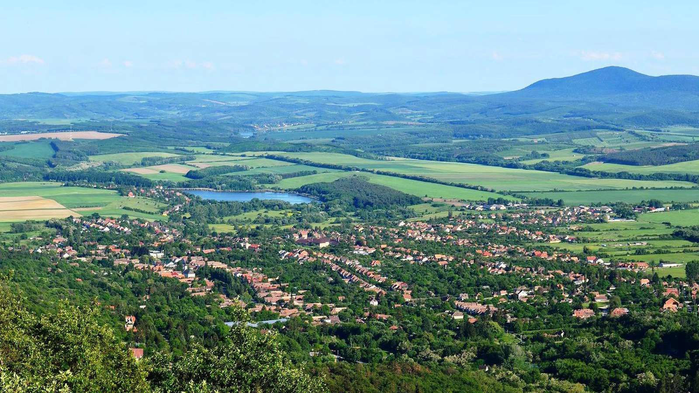

A falu első írásos említése 1282. Neve a hét törzs egyik tagjától származik. A mai Magyarországon a „Diós” kifejezés diófák miatt kapta. A husziták kastélyt építettek a faluban. Az oszmán korszak után 1720-ban 17 ház állt a faluban.Római katolikus templom: a 15. században épült, gótikus stílusban; barokk és klasszicista stílusban 1788-89-ben újjáépítették.
Protestáns templom: 1850 körül épült késő neoklasszicista stílusban.
Öt hidat építettek a Jenő patakon 1914 és 1930 között kőből, téglából és vasbetonból.